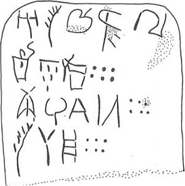
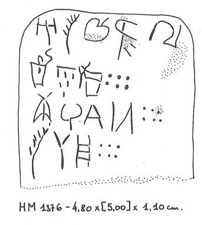

-
PH2
Names
Aliases for the inscription.
PH2, PH 2
Support
Type of Object.
Tablet
Location
Site where object was found.
Phaistos
Findspot
Location at Site.
Unavailable


# "Row Index", "Line Index", "Word Index", "Syllabogram", "Status of Reading"
# R L W I S
# 1 0 1 PA certain
1 1 0 A certain
1 1 0 SE doubtful
1 1 0 TU certain
1 1 0 *21F certain
1 1 1 1 certain
1 2 2 RA certain
2 2 2 O certain
2 2 2 DI certain
2 2 2 KI certain
2 2 3 60 certain
3 3 4 PI certain
3 3 4 RU certain
3 3 4 E certain
3 3 4 JU certain
3 3 5 60 certain
4 4 6 SE doubtful
4 4 6 SA certain
4 4 6 PA₃ certain
4 4 7 60 certain
Scribe
Writer of Inscription.
Unavailable
Context
Approximate Date of Inscription.
Unavailable
Dimensions
Height x Length x Thickness.
[5.00]
4.80
4.10
cm
GORILA OCR
Catalogue
Museum Reference Number.
HM 1376
Hiraklion Museum
Readings
Linear A Transcription
A Linear A transcription with words parsed separately.
Line breaks match the inscription.
𐘇𐘈𐘹𐘐𐄇𐘴
𐘵𐘆𐘸𐄕
𐘢𐘘𐘡𐘶𐄕
𐘈𐘞𐘰𐄕
ASCII Transcription
An ASCII transcription with words parsed separately.
Line breaks match the inscription.
ASETU*21F1RA
ODIKI60
PIRUEJU60
SESAPA₃60
Linear A Tabulation
A Linear A transcription with words parsed separately.
Line breaks are logical, e.g. to represent a list.
𐘇𐘈𐘹𐘐𐄇
𐘴𐘵𐘆𐘸𐄕
𐘢𐘘𐘡𐘶𐄕
𐘈𐘞𐘰𐄕
ASCII Tabulation
An ASCII transcription with words parsed separately.
Line breaks are logical, e.g. to represent a list.
ASETU*21F1
RAODIKI60
PIRUEJU60
SESAPA₃60
Commentaries
PH
2
, page tablet (HM 1376) (GORILA I: 288-289; context unknown)
|
side.line
|
statement
|
logogram
|
number
|
fraction
|
|
.1
|
A-
SE
-TU-QIf
|
|
1
|
|
|
.1-2
|
RA-O-DI-KI
|
|
60
|
|
|
.3
|
PI-RU-E-JU
|
|
60
|
|
|
.4
|
SE
-SA-PA
3
|
|
60
|
|
|
|
infra mutila
|
|
|
|
one of the few documents not written
in one run-on statement; 3 of the 4 statements occupy their own line
(cf. PH 6, KH 79+89)
.1:
1
or
•.
Commentary © John Younger
References
papers/GORILA-Vol1.pdf#page=324